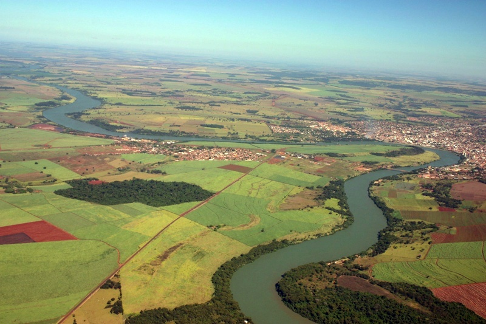

Rio Paranaíba

CC BY-SA 4.0 Imagem: Muriloif. Wikimedia Commons.
{kind=link}
De TriânguloLeaks, a enciclopédia do Triângulo Mineiro
| Resumo | |
|---|---|
| Rio que nasce na serra da Mata da Corda, no município de Rio Paranaíba (MG), e forma, junto ao rio Grande, o rio Paraná — um dos limites geográficos que dão nome ao Triângulo Mineiro. | |
| Dados | |
| Nascente | Serra da Mata da Corda, município de Rio Paranaíba (MG), a cerca de 1.148 m de altitude |
| Extensão | Aproximadamente 1.170 km [verificar] |
| Estados atravessados | Minas Gerais, Goiás e Mato Grosso do Sul |
| Confluência | Une-se ao rio Grande, formando o rio Paraná, na tríplice divisa entre São Paulo, Minas Gerais e Mato Grosso do Sul |
O rio Paranaíba nasce na serra da Mata da Corda, no município de Rio Paranaíba (MG), a cerca de 1.148 metros de altitude, e percorre aproximadamente 1.170 quilômetros por Minas Gerais, Goiás e Mato Grosso do Sul antes de se unir ao rio Grande, formando o rio Paraná. É um dos dois grandes rios — ao lado do rio Grande — cujos cursos historicamente emprestaram o nome à região do Triângulo Mineiro, cujo território se estende, a grosso modo, entre esses dois rios.
Curso e papel geográfico [editar]
Curso e papel geográfico [editar]
Ao longo de seu curso, o Paranaíba forma a divisa natural entre Minas Gerais e Goiás a partir da região dos municípios de Coromandel e Guarda-Mor, e mais adiante entre Minas Gerais e Mato Grosso do Sul. Vários de seus afluentes atravessam antigas zonas de garimpo de diamante do Triângulo Mineiro e do sudoeste de Goiás, ligando a bacia à história da mineração colonial e imperial da região.[1]
Sua confluência com o rio Grande, no ponto de encontro entre São Paulo, Minas Gerais e Mato Grosso do Sul, dá origem ao rio Paraná — um dos maiores cursos d'água da América do Sul e eixo da bacia hidrográfica que leva seu nome.
Localização [editar]
Localização [editar]
Local principal ou mencionado neste artigo: Rio Paranaíba, Minas Gerais.
Ver também
Referências
- ↑ Rio Paranaíba. In: Wikipédia, a enciclopédia livre. Disponível em: https://pt.wikipedia.org/wiki/Rio_Paranaíba.